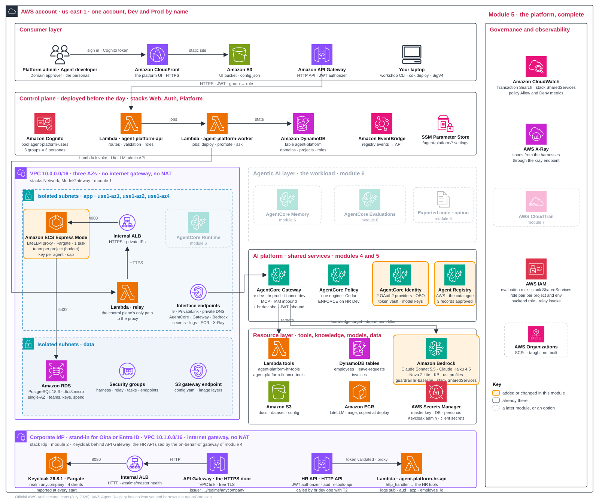

One door for every model Explain · 10 min
A model gateway sits between agents and models. It provides five controls:
- Access: approved model aliases.
- Rate: tokens and requests per minute.
- Spend: budgets and caps.
- Safety: a guardrail on every model call.
- Attribution: cost recorded per key.
Four decisions Design · 10 min
5.1How do agents reach models?
| Option | Pros | Cons | Choose when |
|---|---|---|---|
| A · Direct Bedrock with an IAM allow-list; an application inference profile adds cost tags per project | no extra component; cost allocation by tag | no dollar caps: the profile attributes spend, it does not limit it | one team, trusted developers; add the profile when attribution is the goal |
| B · Gateway inference targets: AgentCore Gateway's built-in LLM gateway | managed; OpenAI- and Anthropic-compatible APIs; token rate limits; one endpoint that routes to Bedrock, OpenAI or Anthropic models | no dollar budgets; rate limits fail open by default; guardrails only as policy conditions (content filter, prompt attack, sensitive information), not a full Bedrock Guardrail attached per call | rate limits suffice |
| C · A model gateway product (LiteLLM, this workshop) | teams and keys; dollar caps with resets; spend logs; a guardrail per alias | one more service to run, about 0.1 USD per hour here; a master key to protect | hard budgets per team and agent; a self-hosted product when model traffic must stay inside your VPC |
Option C is a product category rather than one product. Self-hosted gateways such as LiteLLM, used here, or Portkey's open-source gateway run inside your VPC and keep model traffic on the private path of decision 1.2; hosted routers such as OpenRouter or Portkey's hosted service can reach Bedrock, but they do so from outside your account over the public internet, so they do not fit an endpoints-only network. Anthropic's Claude apps gateway is the same idea for developer tooling: it sits between developers' Claude Code clients and the model provider, and has no service-token flow for unattended workloads, so it is not a path for agents.
This workshop. LiteLLM runs on ECS Express Mode with RDS for keys and spend records. Its four approved aliases, from three vendors (Anthropic, OpenAI and Amazon), inherit the baseline guardrail; the HR project's team may use two of them, claude-sonnet-5 and gpt-6-1-sol, and its Dev key one.
LiteLLM is a proxy server: it receives each model request and passes it on to Bedrock. Model gateway, LiteLLM and proxy therefore name one service. The proxy is private and has two access paths:
- Agents in the VPC: reach its internal load balancer directly.
- Control plane, CLI and laptop: use an IAM-authorised Lambda relay. Admin calls also require the master key.
Guardrail placement: at each alias, rather than per agent, account or tool policy. Every call names an alias, so agents inherit the filter. The browser cannot reach LiteLLM's private /ui; Governance shows its URL and credentials.
Production path. Use one gateway per environment, Multi-AZ, scoped admin keys and domain-specific guardrails.
5.2How is spend controlled?
| Option | Pros | Cons | Choose when |
|---|---|---|---|
| Hard caps with automatic reset | enforceable | an agent can be stopped mid-task | budgets are real limits |
| Quotas and rate limits | protects capacity | not money | throttling is the goal |
| Alerts only | cheapest; no agent is ever blocked | spend can run away | low risk, mature teams |
This workshop. Spend has two enforced levels:
- Project team: 5 USD / 7 days, plus project-wide rate limits.
- Agent key: 1 USD / 7 days, per agent, environment and model.
At the cap, calls return BUDGET_EXCEEDED; admin can raise it in Keys. Caps follow agent keys, not users. Seven-day periods avoid a midnight UTC daily reset during the event.
Keep three numbers separate:
- Declared: a planning allocation in the blueprint.
- Measured: usage recorded in spend logs.
- Enforced: dollar caps and rate limits that block calls.
Production path. Alert before caps are reached. Add per-user enforcement with LiteLLM Enterprise where needed; AWS Budgets by tag provides alerts, not model-call caps.
| If the budget store is down | Pros | Cons | Choose when |
|---|---|---|---|
| Fail open: calls pass, unmetered | agents keep working | spend uncounted until recovery; the cap was advice for that interval | availability outranks the budget; alerts cover the gap |
| Fail closed: calls stop | the cap is a real limit | an outage of the door stops every agent | the budget is a hard boundary: regulated spend, pay-per-use tenants |
Outage behaviour must be chosen and tested:
- LiteLLM: default fail closed on database loss, except cached keys;
allow_requests_on_db_unavailablechanges this. - AgentCore Gateway: rate limits fail open.
- Claude apps gateway: developer-tool gateway; default fail open, with a fail-closed option.
The workshop uses LiteLLM's default. Database-outage behaviour is not tested here.
5.3Where does the catalogue live?
| Option | Pros | Cons | Choose when |
|---|---|---|---|
| The platform's own database | simple | custom API needed for external discovery | one platform |
| AWS Agent Registry: records, approval states, events | shared across accounts and tools; an event on every state change | a new service to learn | sharing beyond one platform |
This workshop. Admin approves the three Agent Registry records. Every persona can read them; invoking a tool still requires the project's allow-list and gateway permissions.
Approval is a visible label today. It does not block deployment or invocation.
Production path. Allow deployment only with approved references. The record's domain owner approves.
5.4Where may a model request be processed?
us. profiles; all possible destinations need permission.| Option | Pros | Cons | Choose when |
|---|---|---|---|
| Regional: the model id without a profile | processed in the Region that received the call | one Region's capacity; some models exist only behind a profile | processing must stay in one Region |
Geographic cross-Region profile: us., eu., apac. | more capacity; stays inside the geography | a geography is not a country; every destination Region must be allowed by IAM and by the SCPs | residency by geography |
Global cross-Region profile: global. | the most capacity; about 10 % cheaper than geographic | any commercial Region may process the request; a Region-deny SCP must learn unspecified | no residency requirement |
This workshop. All four aliases map to us. profiles. Calls enter us-east-1 and may run elsewhere in the US geography. Other platform resources stay in one Region.
Routing follows three rules:
- Platform choice: the alias map sets the route; agents choose aliases, not Regions.
- Permission: a denied destination fails the request. An SCP does not narrow the route.
- Fallback: preserve tool-call support and permitted processing Regions. A fallback cannot bypass a denial.
Production path. Define processing locations per data class. Use bedrock:InferenceProfileArn for SCP profile exceptions. An alias names a route; CloudTrail's inferenceRegion proves where processing occurred.
Platform complete. Every shared object now exists: the catalogue with its approved records, the policy engine and its policies, four gateways (the three of module 4, where the caller is an IAM role, and the on-behalf-of gateway hr-assistant-dev-gw-obo that stands beside HR Dev for callers with a token from the corporate IdP), the agent and gateway role pair of each project and environment, the model-gateway team, the Dev key, and three credential providers in AgentCore Identity: the API-key provider that holds the Dev key, created in this module, and the two OAuth2 providers kc-hr-agent and kc-hr-obo-gateway from module 2. workshop inventory lists the registered part of this by name and ends with platform complete: registry, policy engine with policies, gateways, roles, team and key exist; no agent yet. Two things it does not show: the on-behalf-of gateway, which is deliberately not registered with the control plane, and the two OAuth2 providers, because the command lists API-key providers only. Both are visible in the AgentCore console. Module 6 adds the first running agent.
Your design record, module 5
module_5:
inputs: # read by: workshop apply 5
key_cap: {usd: 1.00, period: 7d} # the Dev key for the agent's model
decisions:
model_access: {workshop: model-gateway, my_call: "..."} # LiteLLM
spend_control: {workshop: hard-caps, my_call: "..."} # team budget + key caps
catalogue: {workshop: agent-registry, my_call: "..."} # manual approval, a label
processing_location: {workshop: geographic-profiles, my_call: "..."} # us. profiles; the SCP side is 3.2Hands-on 20 min
The proxy has run since module 1. This module adds its governed Dev key and approves the catalogue records. CLI proxy calls use the relay.
- recordSet the key cap in
design-record.yaml. - command
workshop apply 5: it first prints the governance summary (the four aliases, each with thehr-baselineguardrail, the policy engine, the gateways) and the project team's spend against its budget. It then creates the Dev key, capped as your module 5 input says and restricted to the model you chose in module 3 (modelundermodule_3.inputs), and makes three calls with the raw key before putting it away: a normal question, where you read the answer, the token usage and the cost headerx-litellm-response-cost; a question about suing a manager, which the guardrail stops withfinish_reason=content_filterand the blocked message; and a call with the project's other allowed alias,gpt-6-1-sol, which the proxy refuses with HTTP 403 because the key may use one model only. Only then does it store the key in the AgentCore Identity token vault (this creates the key's API key credential provider), register that provider with the platform and adopt the key, which now appears in the project's Keys tab, and wait for the first spend to be recorded. On a re-run the key and provider already exist, so the command reuses them and skips the three calls. - command
workshop cap --dev low: as the Platform admin it lowers the Dev key's cap to half of what the key has spent so far (never more than 0.01 USD; 0.01 when no spend is recorded yet) and makes one more call through the proxy, which refuses it before any model runs:OK BUDGET_EXCEEDED, gracefully: HTTP 422, Budget has been exceeded! Key=… Current cost: …, Max budget: …. The text after the comma is LiteLLM's own wording (its error type is the lower-casebudget_exceeded);BUDGET_EXCEEDEDis the platform's code for the same refusal, whichworkshop askprints and the Playground shows as its "Spending cap reached" alert from module 6 on. If the call still passes, the spend the command read had not been written yet (the proxy writes spend in batches every 10 seconds), so the cap it set is still above the real spend: run the command once more. Thenworkshop cap --dev restorewrites your record's cap back before module 6. - screenSwitch to Platform admin: every persona can read the catalogue, but only the admin may change a record's status. In Catalogue, filter on Pending approval and approve the three records that
workshop apply 4submitted:hr-assistant-tools(the MCP server of the HR Dev gateway),kb-hr-policies(the HR policy knowledge base) andmodel-claude-sonnet-5(the model alias named in your record). Approved records become searchable. If the screen is unavailable,workshop approve catalogueapproves every pending record from the command line. - command
workshop inventory: verify the shared platform resources. - recordWrite your four module 5 decisions.
# workshop apply 5, first run (lines shortened; numbers vary)
== governance: approved models, guardrail, engine, gateways
model claude-opus-5 guardrail {'id': '...', 'version': '...', 'name': 'hr-baseline'}
model claude-sonnet-5 guardrail {'id': '...', 'version': '...', 'name': 'hr-baseline'}
model gpt-6-1-sol guardrail {'id': '...', 'version': '...', 'name': 'hr-baseline'}
model nova-2-lite guardrail {'id': '...', 'version': '...', 'name': 'hr-baseline'}
guardrail hr-baseline policy engine True gateways [('hr-assistant', 'dev', 'ENFORCE'), ...]
== the project's team in the model gateway
team hr-assistant: spend 0.0 of 5.0 USD per 7d, tpm 200000, rpm 200, models ['claude-sonnet-5', 'gpt-6-1-sol'], keys 0
== the Dev key for claude-sonnet-5: cap 1.0 USD per 7d
created key hr-assistant-dev-claude-sonnet-5: cap 1.0 USD per 7d, restricted to claude-sonnet-5; raw key sk-1a2b...9z8y (shown once)
hashed key id 1a2b3c4d5e6f7a8b... spend 0.0 of 1.0 USD, resets ...
== first calls through the model gateway with the raw key
the proxy is private (internal load balancer): the call goes through relay agent-platform-model-gateway-relay, a Lambda inside the VPC that forwards the HTTP request as is; the key travels in the Authorization header, the relay adds nothing
[2.6 s] An HR assistant can help an employee with ...
usage 25/48 tokens; cost header x-litellm-response-cost: 0.00058
guardrail: finish_reason=content_filter -> "Sorry, I can't help with that topic. Please contact HR directly."
OK gpt-6-1-sol with this key -> HTTP 403: the key is restricted to claude-sonnet-5 (the team allows gpt-6-1-sol, the key does not)
== store the key in the AgentCore Identity token vault
credential provider arn:aws:bedrock-agentcore:us-east-1:...:token-vault/default/apikeycredentialprovider/litellm-hr-assistant-dev-claude-sonnet-5
== the platform adopts the key
adopted: {"alias": "hr-assistant-dev-claude-sonnet-5", "env": "dev", "model": "claude-sonnet-5", "maxBudget": 1.0, "budgetDuration": "7d", "status": "active"}
== spend
key hr-assistant-dev-claude-sonnet-5: spend 0.00058 USD of 1.0
team hr-assistant: spend 0.00058 of 5.0 USD per 7d
OK model access built
next: `workshop cap --dev low` (the cap drops below the spend and one more call is refused with BUDGET_EXCEEDED), then `workshop cap --dev restore`
3 catalogue record(s) wait for approval: approve them on the Catalogue screen as Platform admin (`workshop approve catalogue` is the fallback)
then `workshop inventory`: platform complete
look: Keys tab: https://.../domains (the project's Keys tab: spend against cap)
look: Catalogue screen: https://.../catalogueThree results to notice. The cost header prices one call, and that spend is what the Keys tab and the caps count. The guardrail answer comes back as a normal completion with finish_reason=content_filter, so an agent can handle it gracefully instead of failing. The wrong alias is refused before any model runs, because access is a property of the key, not of the caller.
Dashboard spend updates about 10–15 seconds after a call.
Read more: Guardrails enforcement; Gateway inference targets; cross-Region inference.
The platform after module 5
The Dev key is in the vault, its cap is enforced and the catalogue records are approved. Tracing (CloudWatch Transaction Search) has been on since module 1 and is waiting for the first agent's traces. The shared platform is ready. Agents are added next. Beside the three gateways of module 4, whose callers are IAM roles, stands the on-behalf-of gateway hr-assistant-dev-gw-obo, which admits the realm's JWTs instead; AgentCore Identity holds module 2's two OAuth2 providers next to the model keys. The gateway's target, the HR API, and the corporate IdP that signs employees in both live in module 2's IdP stack, outside the landing zone and so outside this figure; the IdP sits there as a company's Okta or Entra ID would.

Glossary
- Model gateway
- Controls model access, rates, spend and guardrails. Here it is the LiteLLM proxy.
- Proxy
- The LiteLLM server that is this workshop's model gateway; model gateway, LiteLLM and proxy name one service.
- Alias
- Stable model name, such as
claude-sonnet-5, mapped to a Bedrock model or inference profile. - Team
- A project's allowed models, rate limits and budget in LiteLLM.
- Virtual key
- Model-gateway credential per agent, environment and model, with its own cap.
- Cap
- Enforced dollar limit that resets each period.
- Throttling
- Limits on tokens or requests per minute.
- Inference profile
- Bedrock routing object: geographic profiles route within a geography; global profiles route more widely. Application profiles support cost tags.
- Source, destination Region
- Where a request enters, and where the model processes it. Cross-Region inference can make them differ.
- Fail open, fail closed
- Allow calls or stop them when a control cannot be checked.
- Agent Registry
- AWS catalogue with record states, approvals and change events.